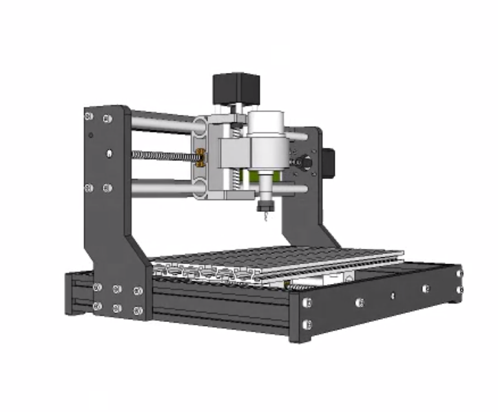
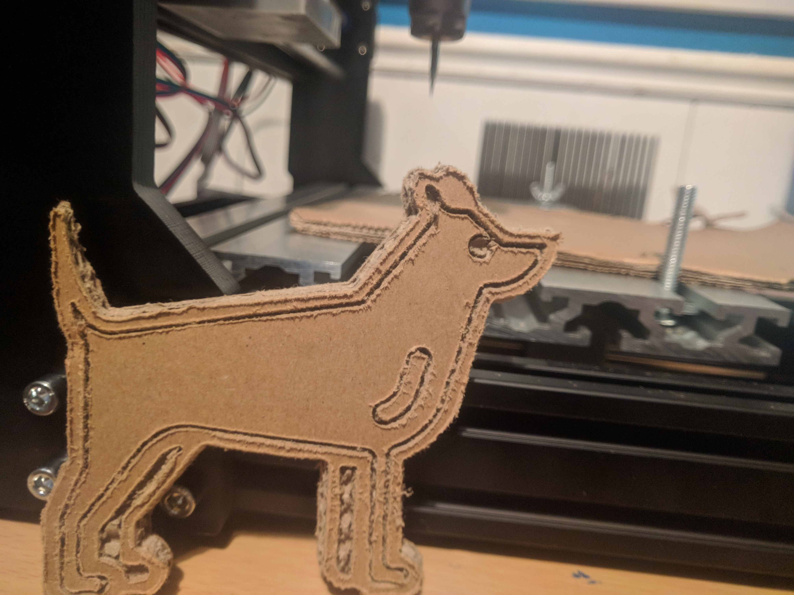
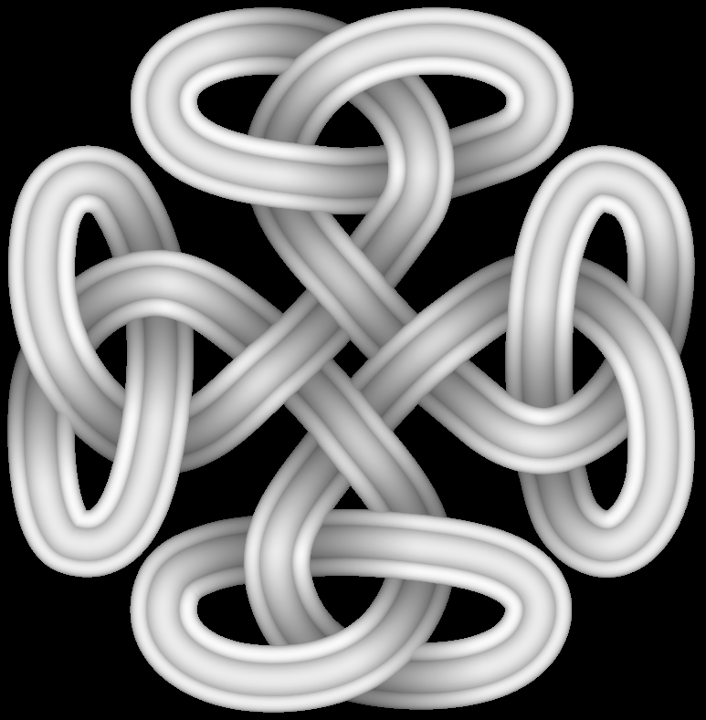
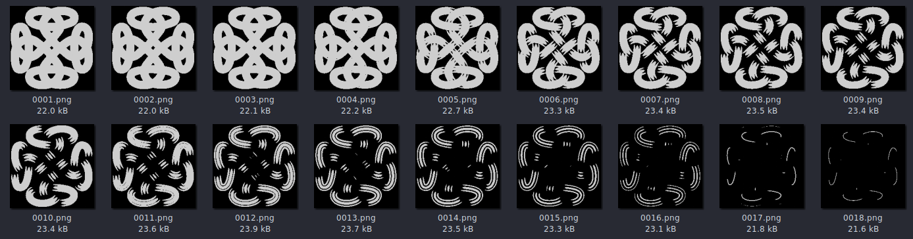
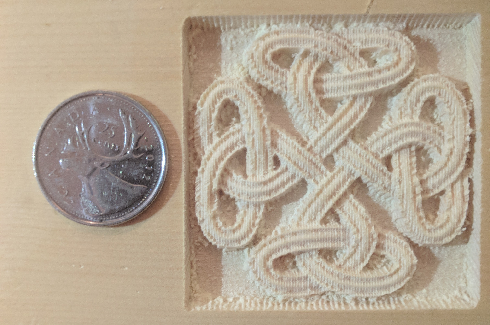
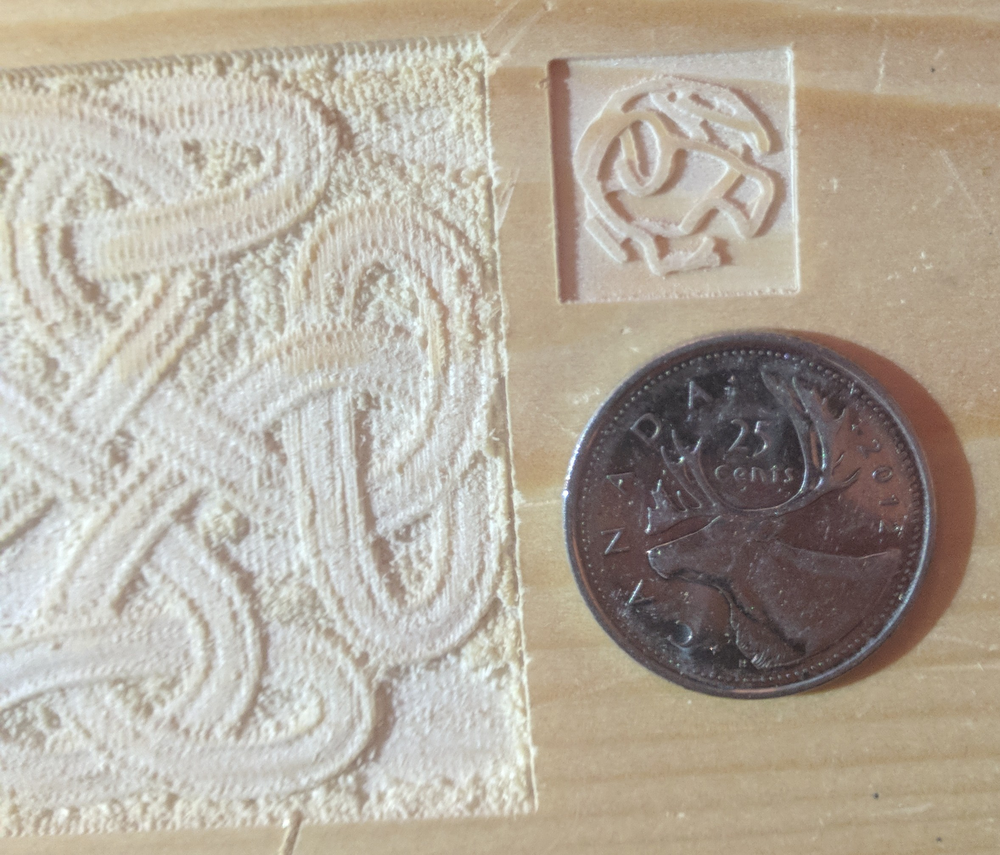

First Week |
December 30, 2022 |
The exact build and model of CNC Machine I got for Christmas is a Sainsmart (Power to the Makers) Genmitsu CNC Router.
Building it wasn't too difficult, and, eager to test it out, I had it built before lunch.

The machine came with a small controller and SD card slot, so I was able to test out the controls right away.
I was very Impressed with how accurate it could be.
Preloaded on the SD card were some GCode files. One of them was named "dragon.gc", which looked the most exciting.
When I tested it out on cardboard, it just started filling a big box. The file was built to carve wood, not cardboard.
As a linux user, the Windows software that came with the machine didn't work, so I had to find other alternatives. So, I went searching for some software. I tested out a
few various programs, and in the end settled on OpenBuilds CAM and CONTROLLER. The simple CAM browser interface makes it easy to
position, scale, and edit shapes that can be sent to to the controller and sent to the machine. In the controller, it's
easy to precisely position the drill and preview GCode.

A couple flaws with the software are the incapability of depth map importing and having a full 3D view of the drill path.
Today I wanted to carve the following image I found on the internet:

I tried separating the image into height layers using blender so I could import the resulting images into OpenBuilds and
carve it out layer by layer.

This could have worked, but the process was tedious and the browser was becoming unusably slow after importing 3+ layers.
None of the software I had used thus far was suitable enough for my needs, so I created an html/javascript method that takes
a depth map and directly generates the GCode that carves the image row by row.
OpenBuilds CAM loaded with five layers of the knot depth map
My own javascript for generating GCode from a depth map. Check it out here.
At a low resolution, (2 steps/mm) the program produced this:

A little further testing showed that at a resolution of 20 steps/mm, I could create this:
